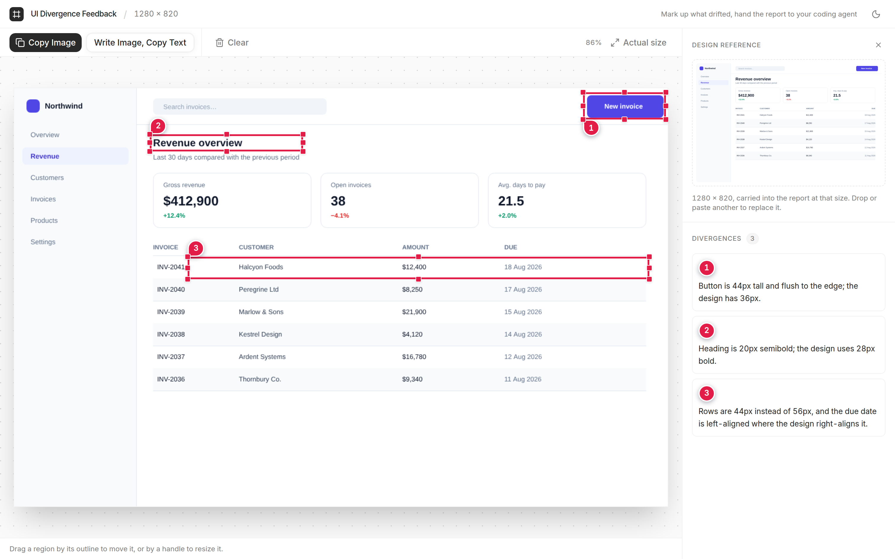
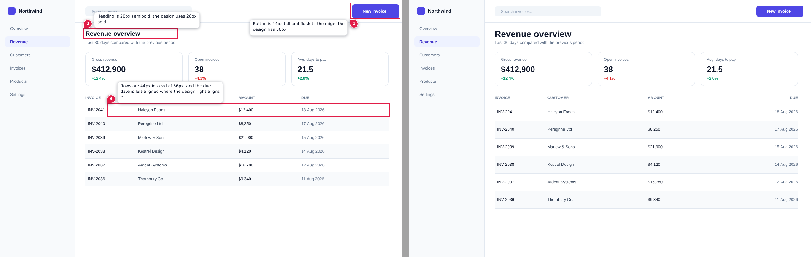
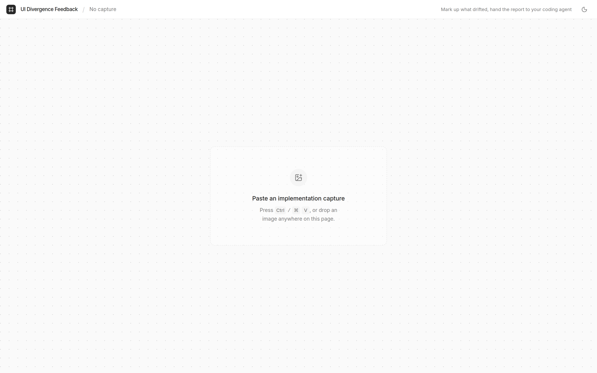

Box what drifted. Don’t describe it.
Drop in a screenshot of what your coding agent built. Drag a rectangle over each thing that’s wrong, write a note, and hand the annotated report back.

A real session, not a mockup.
A box beats a paragraph.
“The button looks a bit off” costs you a turn. A numbered box on the button with “44px tall, design has 36px” doesn’t.
the button in the top right looks a bit off, maybe too tall? and the heading under the search bar should be bigger i think. also the table rows feel cramped
Which button? I’ll adjust the “Search” input padding…
no, the other one. the blue one, top right

One prompt in. Every fix spelled out.
Each box becomes a numbered pin, a note on a card, and a line in the prompt. The card is for people; the text is for the model.
Button is 44px tall and flush to the edge; the design has 36px.
Heading is 20px semibold; the design uses 28px bold.
Rows are 44px instead of 56px; due date should right-align.
One PNG at full resolution, written to ./reports
Paste. Box. Send.
Press ⌘/Ctrl V or drop a screenshot of the running UI. Add the design reference beside it the same way.

Drag a rectangle over each divergence and say what it should be. Every region gets a numbered pin.
Send to Claude Code opens a session in your project with the prompt typed. Nothing runs until you press Enter.
Survives downscaling
Vision pipelines shrink images to a ~1568px long edge. Pins and notes are drawn heavy so they arrive legible.
Every report is a save file
The clean capture, the reference and every note ride inside the PNG as tEXt chunks. Drop it back and keep editing.
Stays off your ports
Serves on 24680, not the 3000 or 5173 your app is using. Taken? It walks up to the next free port.
Nothing leaves your machine.
No login, no account, no telemetry. The server runs on localhost inside your project, and the only file it writes is the report.
Screenshots of unreleased UI stay on your disk.
Into ./reports in the project you started from. Nothing anywhere else.
It opens a session. You read the prompt and press Enter.
Let your agent see the drift.
Node 22+. Run it from your project folder.